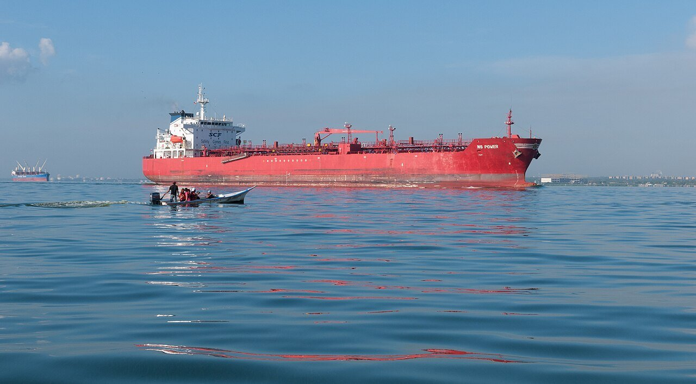
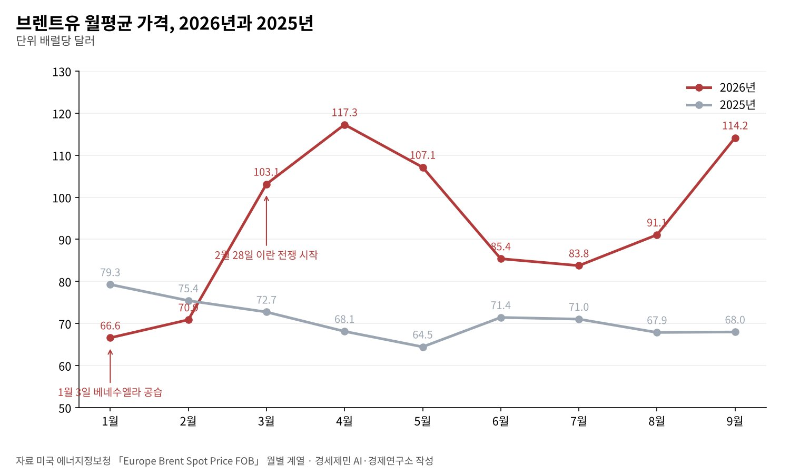
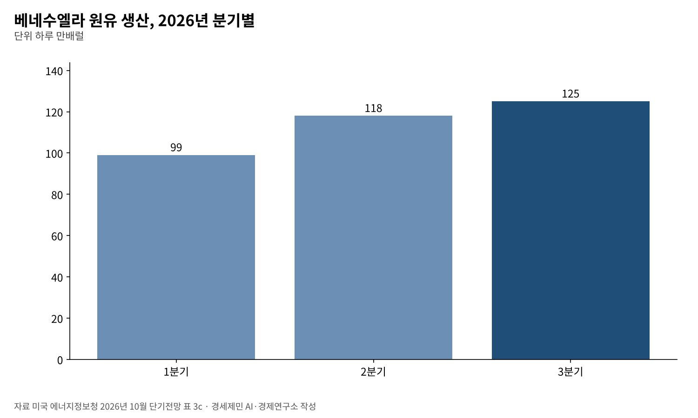

[국제] 베네수엘라 사태 아홉 달, 석유는 누구 손에 가고 비용은 누가 내나
브렌트유 1월 66달러에서 9월 114달러, 값을 올린 건 카라카스가 아니라 호르무즈
베네수엘라 생산 하루 99만배럴에서 125만배럴로, 미국은 매장량 650억배럴 통제 합의
원화는 2년 만에 가장 강해졌지만 수입물가 17.6% 올라, 전쟁 비용은 유가로 왔다
1월 3일 미군의 베네수엘라 공습 직후 원유 시장은 조용했다. 칼리지타임스 보도를 보면 브렌트유는 배럴당 60달러 안팎에서 거의 움직이지 않았다. 베네수엘라 생산이 세계의 1%에 못 미쳐 공급 충격이 작다고 본 셈이다.
이 연재의 원본 칼럼은 미국이 석유를 가져가 유가를 낮추고, 강한 달러로 다른 나라에 전쟁세를 걷는다고 봤다. 아홉 달 뒤 자료는 다른 그림을 보여준다. 유가는 크게 올랐고 원화는 오히려 강해졌다.
그렇다고 비용이 사라지지는 않았다. 전쟁 비용은 환율 대신 유가와 수입물가로 왔다. 베네수엘라 석유의 통제권은 미국 쪽으로 기울었다. 기관 통계로 그 길을 따라간다.

1. 유가를 움직인 건 호르무즈였다
미국 에너지정보청(EIA) 집계로 브렌트유 월평균은 1월 66.60달러, 2월 70.89달러였다. 2월 28일 미국과 이스라엘이 이란을 공격하자 3월 103.13달러, 4월 117.29달러로 뛰었다.
호르무즈해협이 막힌 탓이다. 이란은 3월 초 「비우호국」 선박의 해협 통행을 막았다. 6월 전쟁을 멈추는 양해각서가 서명되고 해협을 다시 연다는 발표가 나오자 6월 평균은 85.40달러로 내려왔다.
평온은 길지 않았다. 유가는 8월 91.08달러, 9월 114.16달러로 다시 올랐다. EIA는 10월 단기전망에서 사우디 동서 송유관과 유조선 공격, 호르무즈 통행 제약을 원인으로 들었다.
EIA는 중동의 원유 생산 차질이 5월 하루 1090만배럴로 정점을 찍고 9월 480만배럴로 줄었다고 본다. 10월 19일 브렌트유 12월물은 109.55달러였다. EIA는 4분기 105달러, 내년 평균 84달러를 내다봤다.

2. 베네수엘라 생산, 늘었지만 판을 바꾸지 못했다
EIA 단기전망 통계표를 보면 베네수엘라 원유 생산은 1분기 하루 99만배럴, 2분기 118만배럴, 3분기 125만배럴이다. 석유 산업이 외국 기업에 열리면서 반년 만에 26% 늘었다(연구소 계산).
같은 기간 중동에서 빠진 물량은 하루 수백만배럴이었다. 베네수엘라가 늘린 하루 26만배럴은 그 빈자리의 일부를 채우는 데 그쳤다. 원본 칼럼이 내다본 「베네수엘라발 저유가」는 오지 않았다.
매장량은 다른 이야기다. 석유수출국기구(OPEC) 기준 베네수엘라의 확인 매장량은 3032억배럴로 사우디아라비아 2672억배럴보다 많다. 다만 오리노코 일대 중질유를 되살리려면 큰 투자와 시간이 든다.
공습 직후 분석가들은 생산이 의미 있게 회복하려면 2020년대 후반까지 걸릴 수 있다고 봤다(칼리지타임스). 지금의 석유 합의는 당장의 유가보다 앞으로 수십 년 동안의 물량을 겨냥한다.

3. 650억배럴, 석유의 주인이 바뀌다
트럼프 대통령은 공습 당일 「우리는 석유 사업을 한다」며 원유를 다른 나라에 팔겠다고 했다. 미국이 쓴 비용은 땅에서 나오는 돈으로 돌려받겠다고도 했다(자메이카글리너).
로드리게스 임시정부는 1월 민간과 외국 기업에 석유 사업을 여는 법을 만들었다. 8월 28일 트럼프 대통령은 매장량 650억배럴을 미국이 통제하는 합의를 「역사상 가장 큰 석유 거래」라 불렀다(AP).
650억배럴은 OPEC 기준 매장량의 21%다(연구소 계산). 기간과 수익 배분 같은 세부 조건은 공개 자료로 확인하지 못했다. 알자지라는 이 합의를 새로운 식민주의라 부르는 비판을 전했다.
석유 수입이 주민의 삶으로 이어지는지가 남은 물음이다. 6월 지진 피해를 세계은행은 196억달러로 추산했다. 10월에는 전력난에 대한 분노가 커진다는 현지 보도가 나왔다(알자지라).
4. 원화는 왜 강해졌나
원본 칼럼은 원·달러 환율 1440원을 미국이 걷는 전쟁세라 불렀다. 10월 20일 서울 외환시장 종가는 1328.1원이다. 2024년 10월 2일 1319.3원 뒤 가장 낮다(서울경제, 머니투데이).
한국은행은 9월 이후 미 달러화가 강세였는데도 원·달러 환율이 내렸다고 분석했다. 수출업체의 달러 매도가 늘었기 때문이다. 외국인 증권자금은 순유출이 커졌는데도 원화는 강해졌다.
수출이 받쳤다. 재정경제부 집계로 9월 수출은 1년 전보다 83.5% 늘었다. 관세청 잠정치로 10월 1~20일 반도체 수출은 222.5% 늘었다. 반도체 업체가 판 달러가 외국인 주식 매도 압력을 눌렀다.
한국은 반도체라는 완충재가 있었다. 같은 처지가 아닌 에너지 수입국이 많다. 통화 강세를 누린 한국의 경험을 일반화하면 안 된다. 원본의 문제의식은 그 나라들에 더 들어맞는다.
5. 비용은 수입물가로 왔다
한국은행 집계로 9월 원화 기준 수입물가는 1년 전보다 17.6% 올랐다. 전달보다도 1.7% 올랐는데 국제유가 상승이 원인이다. 원화 강세가 유가 충격의 일부만 흡수했다는 뜻이다.
소비자물가 상승률은 8월 3.1%, 9월 2.9%다. 재정경제부는 중동전쟁 등 글로벌 불확실성과 고유가에 따른 물가 압력을 위험 요인으로 꼽았다. 취약계층의 고용 여건 악화도 함께 적었다.
에너지 가격 상승은 소득이 낮은 가구에 더 무겁다. 난방과 교통처럼 줄이기 어려운 지출이 소득에서 차지하는 몫이 크기 때문이다. 같은 유가도 계층마다 다른 세금처럼 작동한다(연구소 판단).
수출가격은 9월 40.9% 올라 수입가격보다 훨씬 빨리 뛰었다. 순상품교역조건은 25.4% 좋아졌다. 반도체 이익이 기업과 국가 계정에 쌓일 때, 유가 부담은 가계로 흩어진다. 분배의 비대칭이다.
6. 무엇을 물어야 하나
석유와 금융, 군사력은 한 몸으로 움직였다. 다만 그 경로는 원본이 그린 것과 달랐다. 베네수엘라 석유는 미국의 통제 아래 들어갔고, 유가는 중동 전쟁이 끌어올렸다. 두 사건이 같은 해에 겹쳤다.
경세제민 AI·경제연구소는 세 가지를 묻는다. 첫째, 650억배럴 합의의 조건과 석유 수입 계좌의 관리 방식이 공개되는가. 베네수엘라 국민 몫이 어디에 적혀 있는지 알아야 평가할 수 있다.
둘째, 한국의 에너지 안보는 어디에 기대는가. 반도체 수출이 환율을 받친 올해의 행운이 내년에도 이어진다는 보장은 없다. 원유 수입선과 비축의 셈법을 다시 볼 때다.
셋째, 고유가 부담을 누가 지는가. 수입물가 상승이 가계로 번질 때 에너지 바우처처럼 겨냥한 지원이 필요하다. 석유를 가진 나라와 석유를 사는 나라 사이에서, 그 비용을 사는 쪽의 약한 고리가 먼저 낸다.
참고문헌
기관 자료
- 미국 에너지정보청(EIA), 「Europe Brent Spot Price FOB」 월별 계열(2025~2026년 9월). https://www.eia.gov/dnav/pet/hist/LeafHandler.ashx?n=PET&s=RBRTE&f=M
- 미국 에너지정보청(EIA), 「Short-Term Energy Outlook」 2026년 10월호(10월 6일 발표, 표 3c 포함). https://www.eia.gov/outlooks/steo/pdf/steo_full.pdf
- 한국은행 경제통계1국, 「2026년 9월 수출입물가지수 및 무역지수(잠정)」, 2026년 10월 16일, KDI 경제교육·정보센터 게재. https://eiec.kdi.re.kr/policy/materialView.do?num=288195
- 한국은행 국제국, 「2026년 9월 이후 국제금융·외환시장 동향」, 2026년 10월 16일, KDI 경제교육·정보센터 게재. https://eiec.kdi.re.kr/policy/materialView.do?num=288194
- 재정경제부 경제정책국, 「2026년 10월 최근 경제동향」, 2026년 10월 16일, KDI 경제교육·정보센터 게재. https://eiec.kdi.re.kr/policy/materialView.do?num=288176
- 관세청(재정경제부 게재), 「2026년 10월 1일 ~ 10월 20일 수출입 현황(잠정치)」, 2026년 10월 21일, KDI 경제교육·정보센터 게재. https://eiec.kdi.re.kr/policy/materialView.do?num=288360
연구 논문과 보고서
- Britannica, "2026 Iran war"(2026년 10월 20일 갱신본). https://www.britannica.com/event/2026-Iran-war
- Wikipedia, "2026 Strait of Hormuz campaign"(3월 2일 해협 봉쇄, 6월 17일 양해각서 날짜 대조용). https://en.wikipedia.org/wiki/2026_Strait_of_Hormuz_campaign
- Wikipedia, "List of countries by proven oil reserves"(OPEC 연례통계 인용표). https://en.wikipedia.org/wiki/List_of_countries_by_proven_oil_reserves
언론 보도
- "Oil prices fall as capture of Maduro raises questions over supply", 칼리지타임스(걸프베이스 게재), 2026년 1월 6일. https://gulfbase.com/news/oil-prices-fall-as-capture-of-maduro-raises-questions-over-supply/213687
- "Trump says US is 'going to run' Venezuela, plans to sell oil to other countries", 자메이카글리너, 2026년 1월 3일. https://jamaica-gleaner.com/index%2Ephp/article/news/20260103/trump-says-us-going-run-venezuela-plans-sell-oil-other-countries
- "Trump says US has entered deal with Venezuela to control 65 billion barrels of its oil reserves"(AP), PBS 뉴스아워, 2026년 8월 28일. https://www.pbs.org/newshour/amp/politics/trump-says-u-s-has-entered-deal-with-venezuela-to-control-65-billion-barrels-of-its-oil-reserves
- 알자지라, 「Nicolas Maduro」 주제 쪽(「World Bank estimates Venezuela earthquakes caused $19.6bn in damage」 7.23, 「'We are desperate': Venezuela's power cuts fuel growing public anger」 10.6, 「Why are people calling Venezuela oil deal a new form of US colonialism?」 9.3). https://www.aljazeera.com/topics/people/Nicolas-Maduro.html
- "Venezuela opposition renews support for Maria Corina Machado as leader", 알자지라, 2026년 10월 18일. https://www.aljazeera.com/news/2026/10/18/venezuela-opposition-renews-support-for-maria-corina-machado-as-leader
- 김혜란, "원·달러 환율, 올해 최저 종가…2.2원 내린 1328.1원 마감", 서울경제, 2026년 10월 20일. https://m.sedaily.com/article/20103845
- 최민경, "원/달러 환율, 2.2원 내린 1328.1원", 머니투데이, 2026년 10월 20일. https://www.mt.co.kr/economy/2026/10/20/2026102015350643046
- "원달러 환율 2년 만에 최저치…국제유가 혼조세", 중기이코노미, 2026년 10월 20일. https://www.junggi.co.kr/news/articleView.html?idxno=38138
[사진 출처]
- [사진1] Wilfredor, "Oil tanker crossing the bridge over Lake Maracaibo.jpg", 위키미디어 공용, CC0. https://commons.wikimedia.org/wiki/File:Oil_tanker_crossing_the_bridge_over_Lake_Maracaibo.jpg
※ 이 기사는 AI 프로그램 클로드를 활용해 작성했습니다.
관련기사
- [국제] 베네수엘라 군사행동 아홉 달, 유엔헌장 2조 4항은 무엇을 지켰나
- [동맹과 국방] 군사력 세계 5위 한국, 자주국방은 어디까지 왔고 동맹은 무엇을 요구하나
- [동맹과 국방] 전작권 전환, 한국은 '2028년' 미국은 '2029년 1분기'…12월 안보협의회의가 가른다
- [정상외교] 같은 동맹 같은 청구서, 유럽이 한국의 대미 협상을 지켜본 이유
저작권자 © AI경세제민 무단전재 및 재배포, AI학습 및 활용 금지